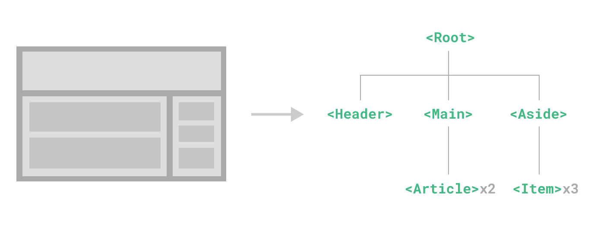

Vue + TypeScript + Pinia
About me
 ❤️🔥 Estrella Galicia
❤️🔥 Estrella Galicia
🖕 Verdura
🎨 Naranja
🎮 Pokemon Arceus
🧑💼 SCRM Lidl International Hub
🌐 developerro.com
The problem
Components model
Mediator pattern
Zombie notification bug
Flux architecture
Single data flow direction
Single dispatcher
Single data source of truth
Flux architecture
Redux
Data is inmutable
Reducers as time machine (no dispatcher)
Only one complex store
Redux
Vuex
Official flux implementation
Reactive (no immutable)
With mutations (no reducers)
With getters (almost single data flow direction)
With modules (multiple sources of truth)
Vuex
Pinia 🍍
Without time machine (no mutations no magic strings)
Without nested modules (no magic strings and single source of truth
Getters only for computed values
Simple, fast and lightweight